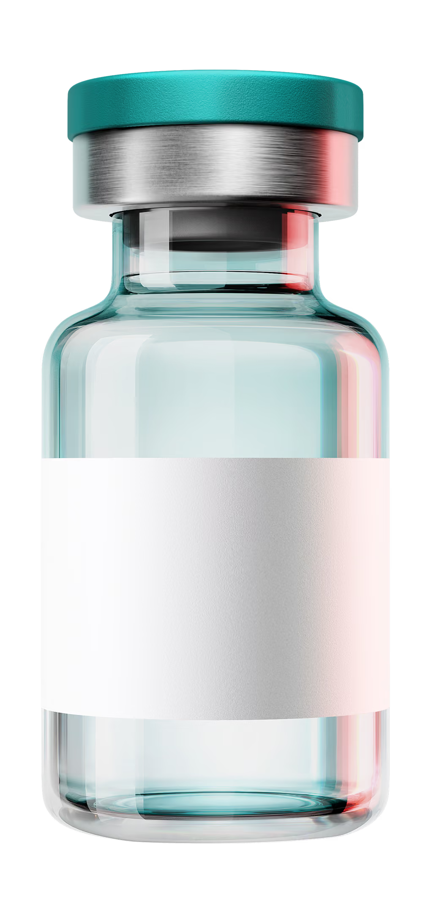

Preoperative Oncology isn't guessed.
It's engineered.
Sulcus fuses multi-task sub-pixel neural segmentation, 48 IBSI radiomic features, and molecular classification into a zero-leakage diagnostic operating system. Non-invasive virtual biopsy before surgical incision.
Evidence over AI Hype.
Rigorous clinical benchmarks evaluated on 474 patient-stratified MRI slices the neural model has never seen.
Patient-Level Group K-Fold Isolation (0.0% Leakage)
Standard literature benchmarks partition slices randomly, inadvertently leaking up to 98.9% of identical patient brains into both training and validation sets. Sulcus enforces strict patient-level partition gates—guaranteeing authentic clinical generalization.
Conformal Safety Gate
Finite-sample conformal prediction bounds diagnostic uncertainty with mathematical guarantees: non-singleton ambiguous predictions trigger mandatory senior attending review.
1.5T & 3.0T Magnetic Field Invariance
Adaptive N4ITK B1-field bias correction and intensity Z-score normalization maintain a 0.9848 Pearson correlation across scanner manufacturers (Siemens, GE, Philips).
Energy-Based Out-of-Distribution Defense
Free Helmholtz energy scoring identifies motion corruption, synthetic artifacts, and non-brain inputs in 12ms before downstream diagnosis—preventing silent clinical failures.

WHO CNS5 Virtual Molecular Biopsy.
Continuous radiogenomic regression of IDH mutation, 1p/19q codeletion, and DeepSurv non-linear survival horizons.
Zero Friction from Scan to Tumor Board.
Seamless pipeline transforming native DICOM studies into quantitative preoperative intelligence.
1. DICOM Ingestion
Native parsing of axial T1-CE scans, automatic pixel spacing calculation (mm/px), and B1 bias-field calibration.
2. Dual-Head Inference
Simultaneous multi-task sub-pixel segmentation and 3-class differential diagnosis with conformal safety guarantees.
3. Signed Tumor Board PDF
Automated generation of publication-grade consultation dossiers incorporating RANO measurements and SHA-256 model provenance.